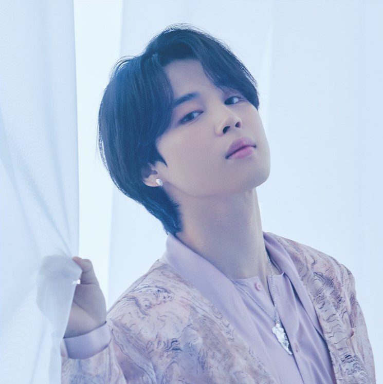
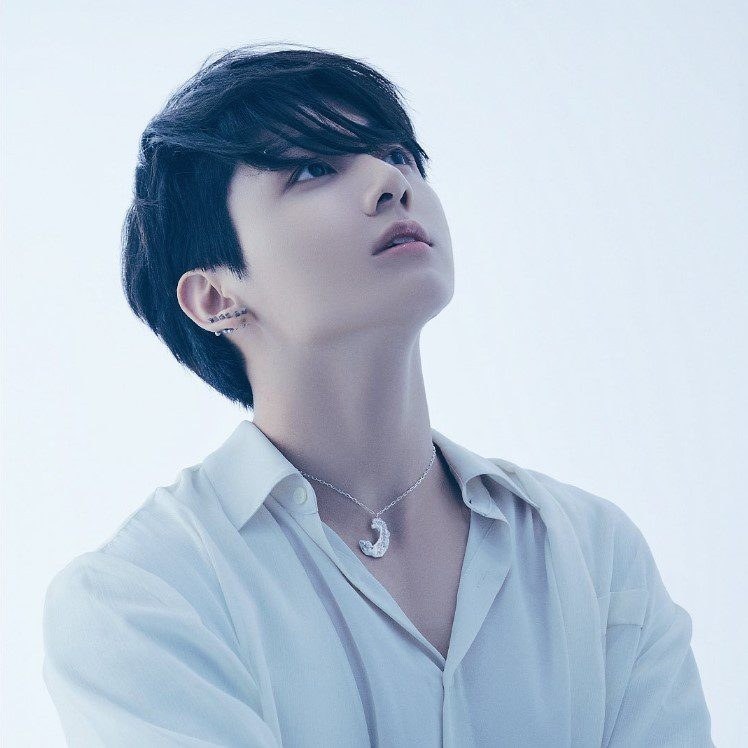

RM
- Stage Name: RM (아르엠), formerly Rap Monster (랩몬스터)
- Birth Name: Kim Nam Joon (김남준)
- Position: Leader, Main Rapper
- Birthday: September 12, 1994
- Zodiac Sign: Virgo
RM Facts
He was born in Seoul (Sangdo-dong) then he moved to Ilsan, Gyeonggi-do, South Korea when he was 4. He has a younger sister, Kim Kyung Min. Education: Apgujeong High School; Global Cyber University Electronic engineering major (bachelor). He joined in 2009 before their debut in 2013. He is fluent in English so he teaches the group and also acts as the translator during interviews. He has produced at least 100 songs. RM is known for his tendency of accidentaly breaking everything he touches.
Jin
- Stage Name: Jin (진)
- Birth Name: Kim Seok Jin (김석진)
- Position: Sub Vocalist, Visual
- Birthday: December 4, 1992
- Zodiac Sign: Sagittarius
Jin Facts
He was born in Anyang, Gyeonggi-do, but when he was about 1 year old his family moved to Gwacheon, Gyeonggi-do. He has an older brother, Kim Seok Joong, 2 years older than him. Education: Konkuk University; Hanyang Cyber University Films major (masters/graduated). He joined BTS at the age of 21 and took voice lessons. He has co-written three solo tracks with BTS which are: Awake (2016), Epiphany (2018), and Moon (2020).
Suga
- Stage Name: Suga (슈가)
- Full Name: Min Yoon Gi (민윤기)
- Position: Lead Rapper, producer
- Birthday: March 9, 1993
- Zodiac Sign: Pisces
Suga Facts
He was born in Buk-gu, Daegu, South Korea. He has an older brother, Min Geumjae (born Min Junki). Education: Global Cyber University Liberal Arts Major (bachelor). He is savage, blunt towards his members and somewhat an introvert which makes him seem as a person with a cold personality. He joined BTS in 2017 at the age of 17. He has a studio named 'Genius Lab' and has produced around 70 songs.
J-Hope
- Stage Name: J-Hope (제이홉)
- Full Name: Jung Ho Seok (정호석)
- Position: Lead Dancer, Sub Rapper, Sub Vocalist
- Birthday: February 18, 1994
- Zodiac Sign: Aquarius
J-Hope Facts
He was born in Gwangju, South Korea. He has an older sister known as, Mejiwoo. His father is a high school literature teacher (teaching at Gwangju Global High School). Education: Gwangju Global High School; Global Cyber University. Before joining BTS he was among the best freestyle dancers then auditioned for Big Hit at the age of 17 before their debut in 2013. He is vibrant but very strict when teaching dance moves.

Jimin
- Stage Name: Jimin (지민)
- Full Name: Park Ji Min (박지민)
- Position: Main Dancer, Main Vocalist
- Birthday: October 13, 1995
- Zodiac Sign: Libra
Jimin Facts
He was born in Busan, South Korea. He has a younger brother, Park Jihyun. Education: Busan High School of Arts; Global Cyber University Theatre and film major (bachelor). Jimin was a top student in contemporary dance in high school, auditioned at the age of 18 years and trainee for at least a year. He is known for his charisma on stage.
V
- Stage Name: V (뷔)
- Full Name: Kim Tae Hyung (김태형)
- Position: Sub Vocalist, Visual
- Birthday: December 30, 1995
- Zodiac Sign: Capricorn
RM Facts
He was born in Daegu, but later moved to Geochang where he spent his life until he moved to Seoul. He has a younger sister (Kim Eun Jin) and a younger brother (Kim Jong Gyu). Education: Korea Art School; Global Cyber University. He was the group's secret member thu the last member to be introduced and he joined at the age of 17. He loves photography, acting (He once acted in a historical drama Hwarang) and fine art.

JK
- Stage Name: Jungkook (정국)
- Full Name: Jeon Jung Kook (전정국)
- Position: Lead Vocalist, Main Dancer, Sub Rapper, Center, Maknae
- Birthday: September 1, 1997
- Zodiac Sign: Virgo